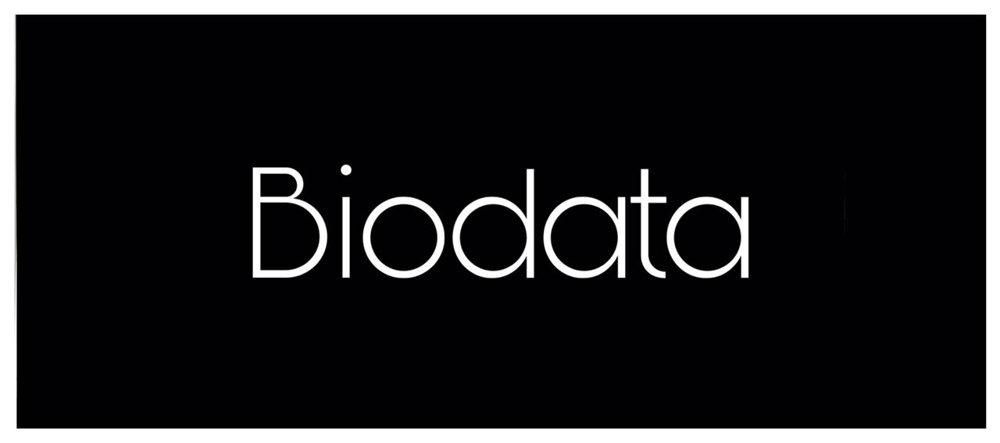
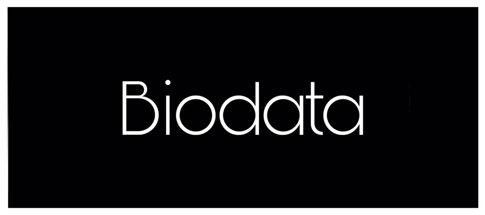
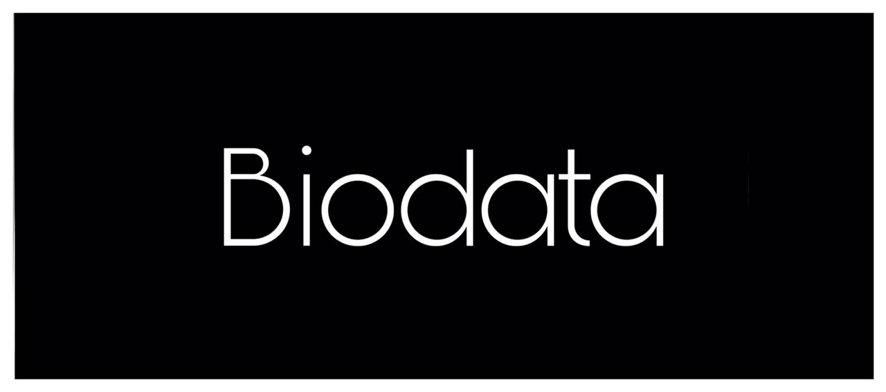
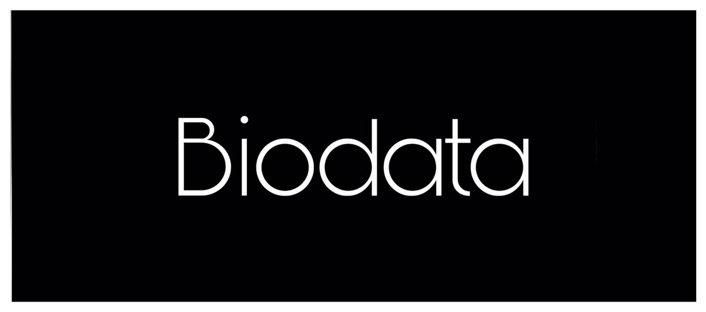

 

After finishing school, I continued to seek experience as an employee by working as a waiter
at a karaoke entertainment center located at harbor place shopping centre, klang.
After I worked as a karaoke center server, I was determined to change jobs on the
intention of wanting to find new experiences and wanting to improve myself.
For 5 months I was a sales marketing at a sewing material supplier
company called Alnasha craft located in sungai udang, klang
After I finished my contract with alnasha craft and needed to further my studies in diploma
of information management , I used the knowledge and experience I had
throughout my work as a sales marketing by setting up a small
business online by becoming an agent for apple products.
Once I was determined to stop being an agent for apple products, I was determined to Set
up my own business called surferserf.co which supplies headdresses i.e. hats
and sells them online while I was busy finishing my studies
in information management diploma.
In addition, because of the covid-19 pandemic that hit our country, classes have been
set up online from home only. So i made photography as my hobby and at
the same time i brought in my side income as a student